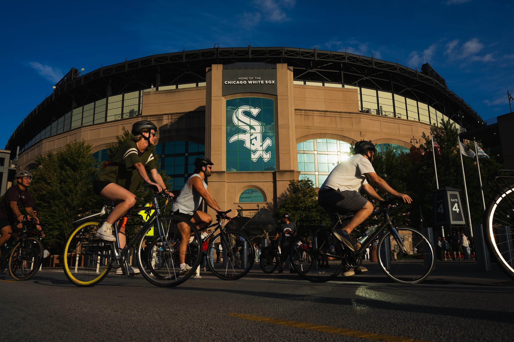
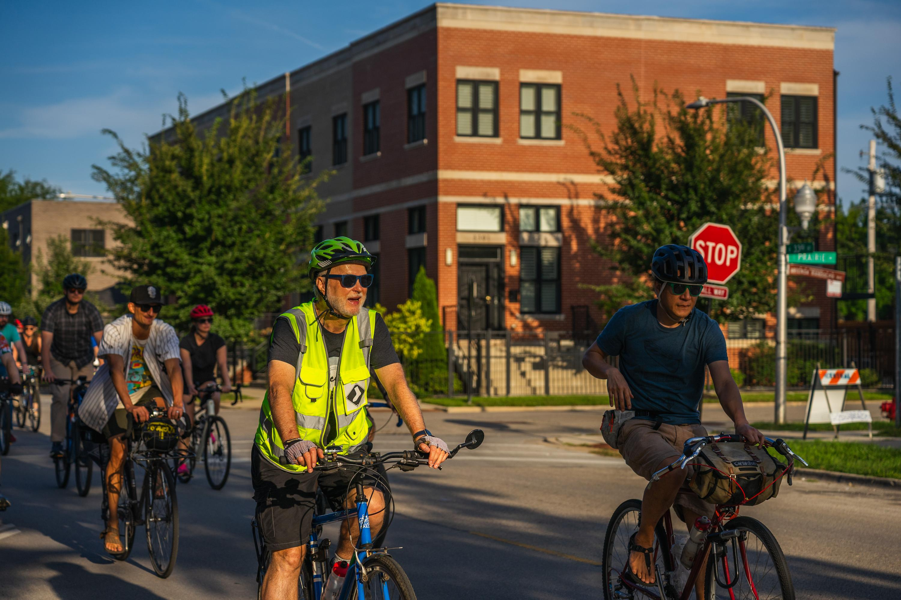
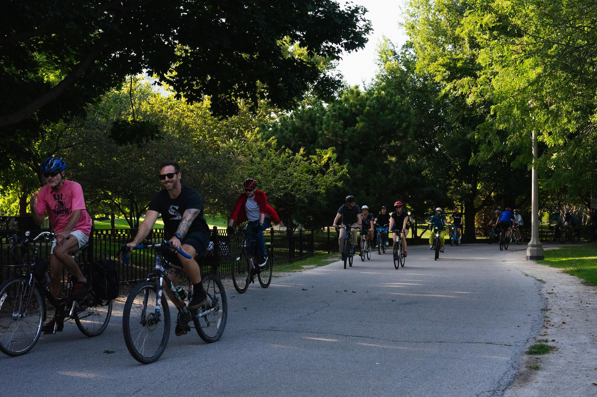
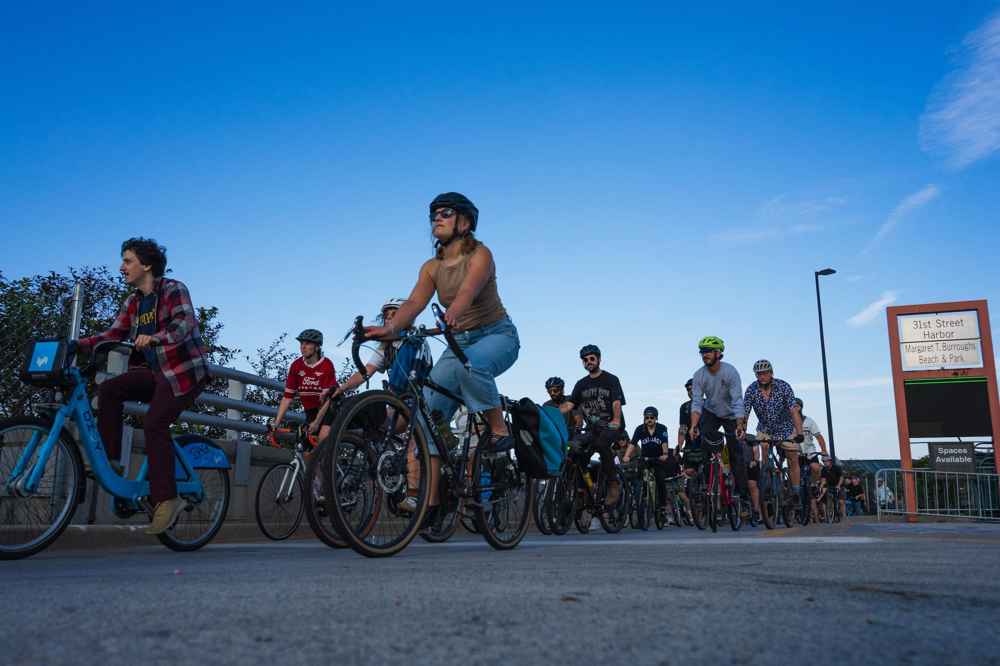
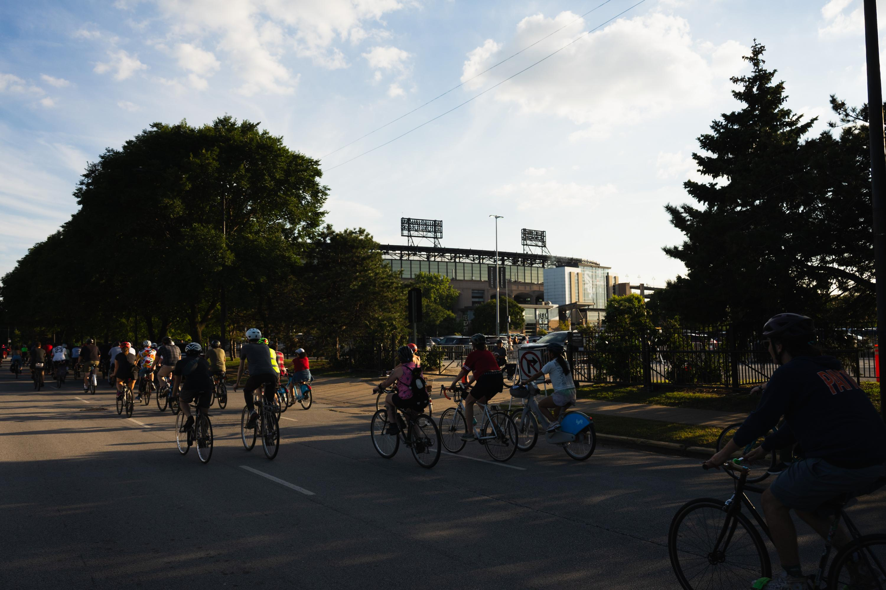
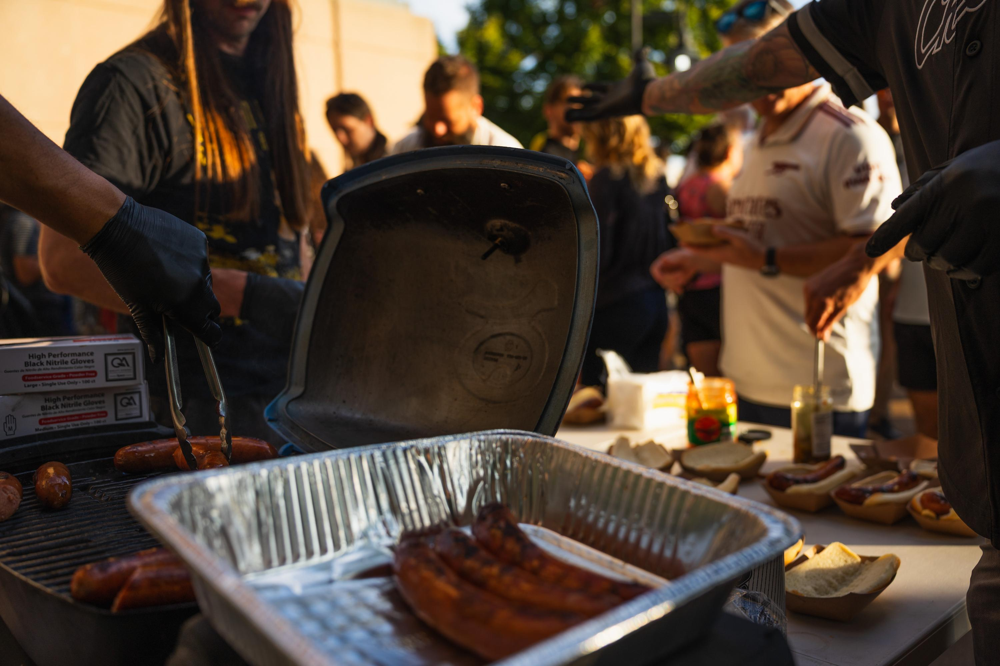
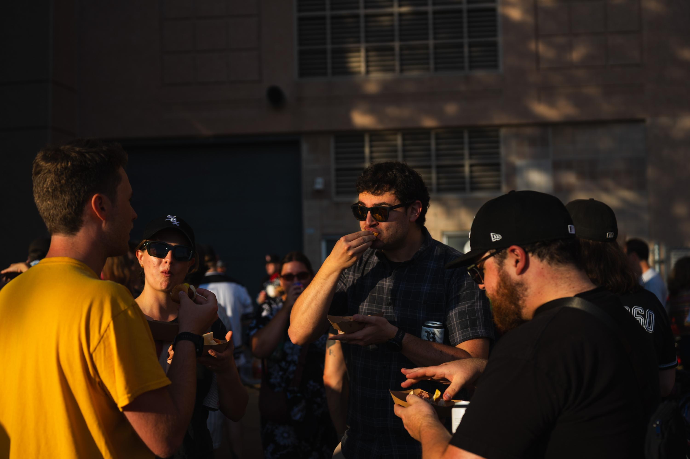

Bikes, Beer and Baseball
Bikers find community on way to Sox game
On a Tuesday afternoon, with the Buckingham Fountain roaring in the background and the lakefront trail buzzing as usual, around a hundred bicyclists trickled in.
At 5:30 p.m. sharp they headed out, building community on the way.
Daniel Streicher and Peter Hopkins started Bike Sox for one thing: a cold beer during the hot summer of 2021. Streicher would bike to Rate Field and meet Hopkins at the bike racks before the game to tailgate.
The growth was slow at first, attracting a handful of people from the local advocacy group Bike Grid Now.
After a couple of tailgates, they added a group ride. It is one of dozens of weekly and monthly group rides exist throughout the Chicagoland area according to chicagogrouprides.com.
The ride's initial start point varied in its early days. Sometime starting in Lake View or at the Lincoln Park Chess pavilion, but always made its way down the lakefront trail before jogging west through Douglas to make its way to Rate Field.

Bikers chat while riding to Rate Field. Aug 25, 2026.
These rides started to blow up, attracting more and more bikers from a wide range of backgrounds.
Michael Hill first joined the Chicago Bike Sox around two years ago after they moved from Houston.
“I was looking for bike groups in Chicago... and found out about the Bike Sox,” Hill said, “I like riding my bike and I like hanging out with people and Tuesdays usually means cheaper beer and pizza at the park, so that's a big incentive.”
Hill is also a part of the Evanston Bike Club, which hosts various races throughout the year, notably for Hill the 62 mile “North Shore Century” race which he has participated in.
The group has worked as an onramp for bikers to find other biking groups.
Wayde Grinstead first learnt about the Chicago Bike Sox through social media two years ago through the internet.
"I was just Googling stuff about, you know, like, groups in Chicago and saw this one and I'm a bike fan and I'm a baseball fan and it's a good overlap," Grinstead said.
Through the Chicago Bike Sox he got involved in CyclingxSolidarity. The group is a bike based mutual aid group that has organized Bike Tours during the federal immigration crackdown, buying out tamale vendors and distributing them to homeless people, among other mutial aid efforts.
“The idea of mutual aid is important to me. So, being able to ride bikes and contribute to that stuff and be outside and make community is like win win win win win win,” Girnstead said.
For others, the community that has formed has been the main driver.
For Dave Glowacz, this was his second ride. For him, the community has overpowered his waning interest in baseball.
“I used to be a really hardcore baseball fan. In about 95 when the strike happened and I became aware of the economics I kind of made me less of a baseball fan but I liked the idea of going to a ball game with a hundred other bikers. That's very fun,” Glowacz said.
Although this was only his second ride with the group, he has been involved in the cycling community for a long time. He became a certified bike instructor in 1987 and has helped children and adults learn how to bike throughout the Chicagoland area.
Due to this growth, Streicher and Hopkins had to rebuild the ride. “The original route was a lot different. It was kind of built for me to be able to ride with a small group of people without needing marshals,” Streicher said.
So they moved the starting location to Queen's Landing—right in front of the Buckingham Fountain—and, starting this year, started working with the Sox who have been helping manage traffic as the riders come into the ballpark.

Bikers ride down the lakefront trail towards Rate Field. Aug. 25, 2026.
Forming a long, mostly two person wide line, they biked the five mile journey to Rate Field. They rode under the trees that line the lakefront trail. They passed behind the Shedd Aquarium and the rows and rows of boats parked in Burnham Harbor at a leisurely pace so as not to lose anyone.

Bikers turn west towards Rate Field at 31st Street Beach. Aug. 25, 2026.
Once they hit 31st Street Beach they turned left, snaking their way through the city. Marshalls blocked the intersections off briefly as the group passed, talking and laughing.
As they got closer to the ballpark, residents and fellow bikers cheered on.

The Chicago Bike Sox arrive at Rate Field. Aug. 25, 2026.
When they finally made it to the bike racks, located right outside of right field, the smell of bratwursts filled the air. Cut in half they filled small paper trays as the bikers slowly formed a line. Jars of gardinaria and kimchi (nearly empty by the end) sat beside packets of mustard and ketchup.


(Left/Top) Bratwursts are served to bikers. (Right/Bottom) Bikers eat bratwursts while chatting before the Chicago Sox game against the Texas Rangers. Aug. 25, 2026.
When the first pitch came at 6:40pm, people stuck around, only slowly making their way to the section everyone bought their tickets in.
Updated on August 27, 2026 to fix capitalizations.